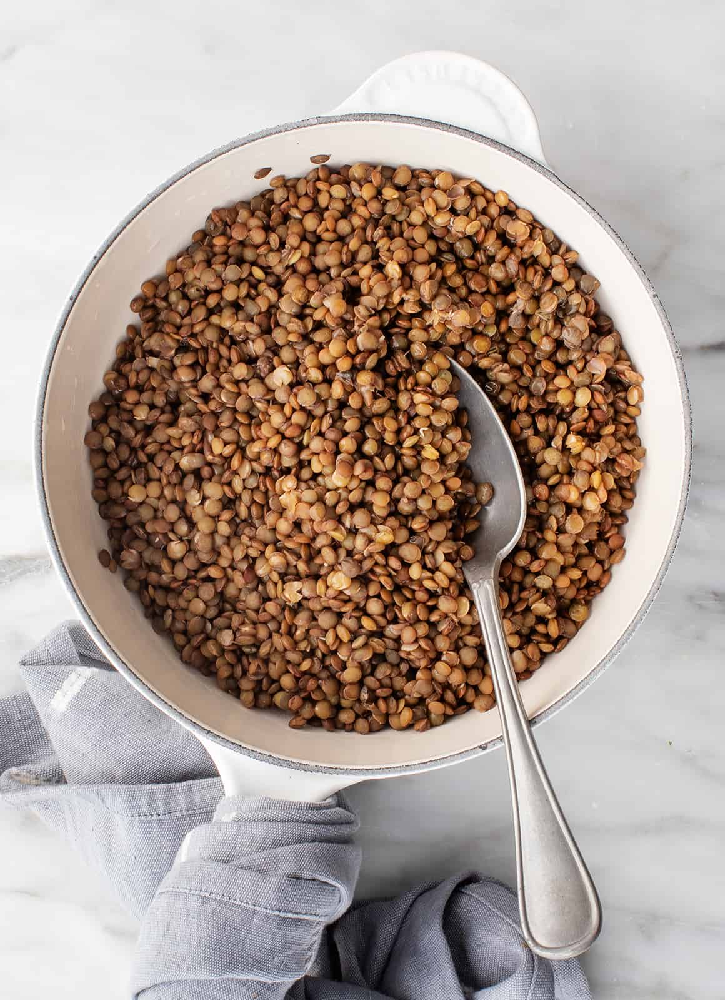

Lentils recipe

Ingredients
- lentils
- some meat (pork ribs, chicken breast, chorizo...)
- some vegetables (potatoes, green pepper or red pepper, carrot ...)
- A leaf of laurel
- A bit of garlic
Steps
- Rinse. Place the lentils in a strainer and pick out any debris or shriveled lentils. Thoroughly rinse under running water.
- Boil. Combine 3 cups of liquid (water, broth, etc.) with 1 cup of dried lentils in a saucepan. Add seasonings such as garlic or bay leaves (but don't add salt yet), and bring to a boil.
- Simmer. Reduce heat to low and cover. Let the lentils simmer until they're soft but not falling apart. Refer to cooking times below for how long to cook each type of lentil.
- Strain. Strain lentils and return them to the pan and salt to taste. And there you have it!
go back to the index